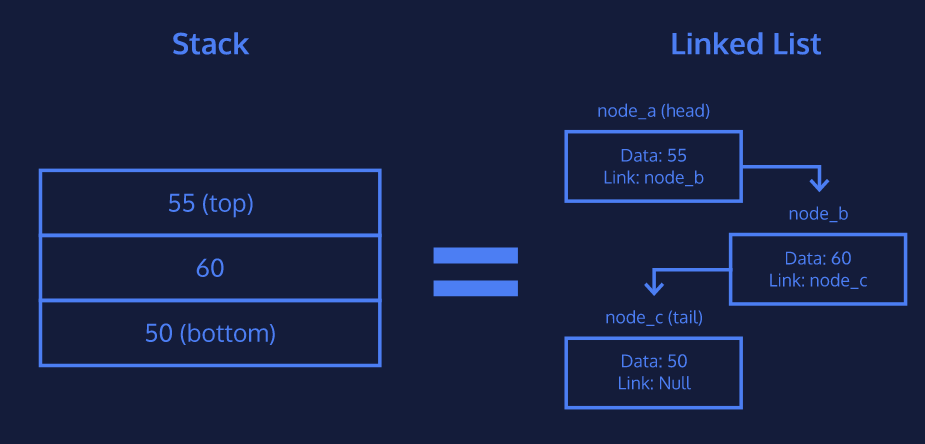

Welcome to the Stacks page
A stack is a data structure which contains an ordered set of data
Stacks provide 3 methods of interaction:
A stack also can also be seen as weights on a gym bar. In the push image, the weight 50 is being pushed on the stack. In peek the weight 60 is being peeked at. In pop, the weight 55 is being popped off the stack
Stacks can be implemented using a linked list as the underlying data structure because it’s more efficient than a list or array.
In this image we can compare stacks and linked lists and see how the 3 stacks or 3 nodes contain data and link to the next stack or node
 © Copyright Ayaan Merchant
2020